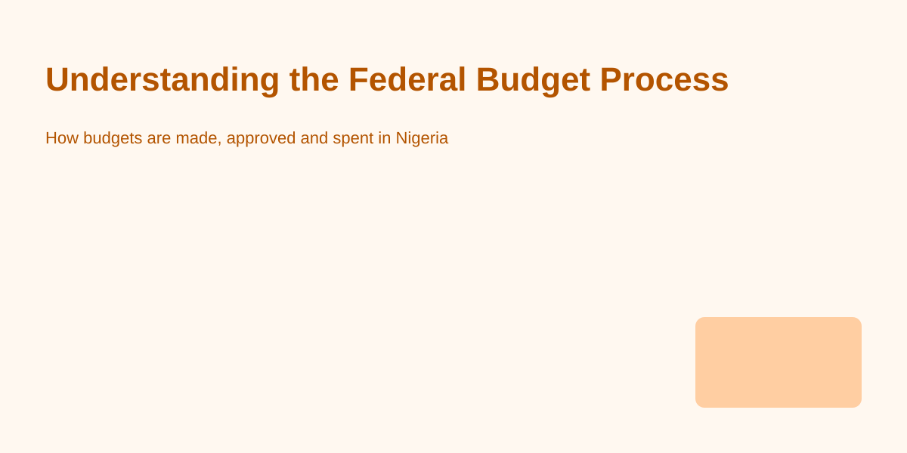

The federal budget is the government's primary plan for raising and spending public money over a fiscal year. It determines which priorities will receive resources, sets targets for revenue collection, and provides the legal authority for ministries and agencies to spend. Understanding how the budget is made, approved, and monitored helps citizens follow public spending and hold institutions accountable.
The process typically follows several stages: formulation, approval, execution, and audit. In the formulation stage, ministries prepare proposals based on policy goals and program needs. Each ministry submits estimates to the Budget Office, which consolidates proposals and prepares a draft budget aligned with the government's macroeconomic framework.
Approval follows in the legislature, where the National Assembly examines the executive's proposals, conducts hearings, and may adjust allocations. Once approved, the budget becomes law and provides appropriation authority to ministries and agencies.
After approval, the execution stage begins. Ministries receive releases of funds according to cash-flow plans and must follow procurement rules and financial management regulations. Agencies report progress through budget performance reports and routine financial statements. Effective execution requires clear plans, trained personnel, and systems for tracking expenditures and results.
Transparency tools such as published budget documents, procurement notices, and expenditure reports enable citizens and civil society to scrutinize how public money is used. Many governments publish user-friendly budget summaries, and some ministries post details of projects and contracts online. Citizens can use these documents to check whether promised projects are being implemented and to follow up with relevant agencies.
1. Look for the approved budget document and summary published by the Budget Office or Ministry of Finance. These documents outline allocations by ministry and program.
2. Track procurement portals and contract awards to see which firms were contracted and for which projects.
3. Read ministry and agency performance reports which often include progress indicators and expenditures.
4. Use audit reports from the auditor-general and other oversight bodies to see findings about financial irregularities or shortcomings.
The budget defines national priorities—what gets funded and what does not. When budgets are well-prepared, transparent, and executed effectively, public services improve and development objectives are achievable. Conversely, weak budget processes can lead to waste, delays, and reduced public trust.
For specific budget queries, contact the relevant ministry or the Budget Office. For help locating documents, reach out to our editorial team.